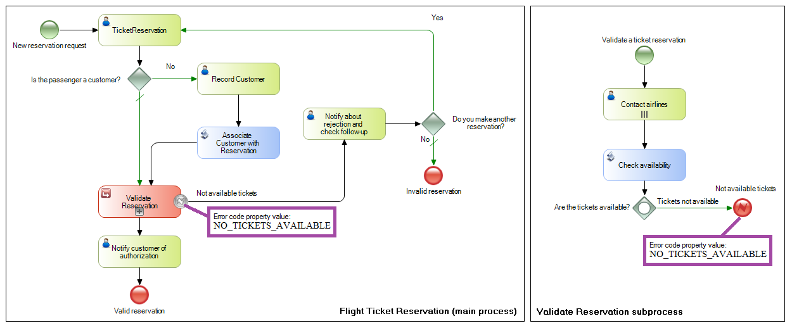

In combination with and an Error Intermediate Event, this model allows us to find the situation that caused the error in the sub-process and take various actions in the main process. SymbolDescriptionThe error triggered by this event will eventually be caught by an error intermediate event on a higher level. Besides including a name, this type of event includes an error code. These events differ from the signals because they aren't broadcasted to all processes. They have a specific range of visibility and only can be detected by a parent process. The event moves up in the hierarchy of processes and is trapped by the first ancestor process possessing an intermediate error event attached to the subprocess symbol. ExampleThe following example shows how this event is used. The Flight Ticket Reservation process has a subprocess called Validate Reservation, which validates the details of the reservation that has been entered. For example, if there are no tickets available, you need to indicate that the ticket validation process must be canceled. Also, you must return to the main process to notify the customer and offer the possibility to request new dates for the reservation. To model this, you insert an Error End Event in the Validate Reservation process, and in his event Error Code property, you type “NO_TICKETS_AVAILABLE”. This type of end event throws an error that allows the flow to continue in the ancestor process, to which you will add an intermediate error event to find this error. You accomplish that by attaching an Error Intermediate Event to the Validate Reservation subprocess in the Flight Ticket Reservation process, and you set the Error Code event’s properties with the text “NO_TICKETS_AVAILABLE”, exactly the same text you used before in the Error End Event.  ScopeObjects: Business Process Diagram See Also
|
| Backlinks | ||
| Toc:GeneXus BPM Suite | None End Event in BPD | Signal End Event in BPD |
| Terminate End Event in BPD |